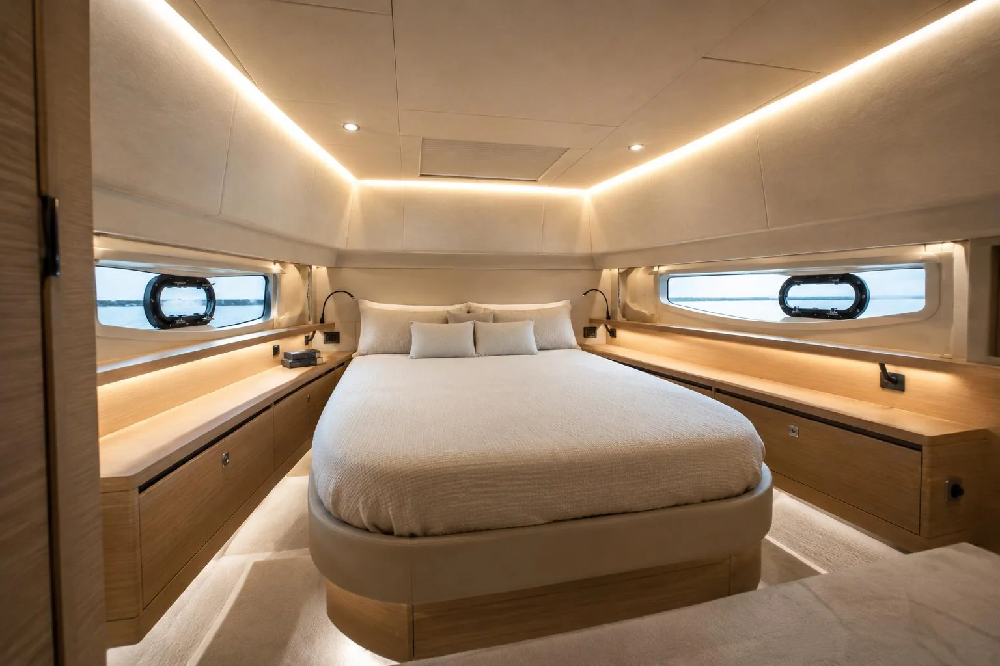
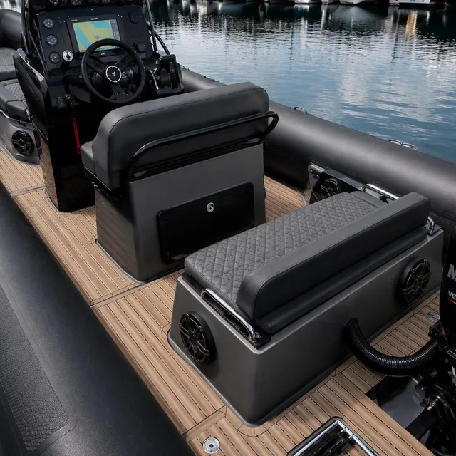
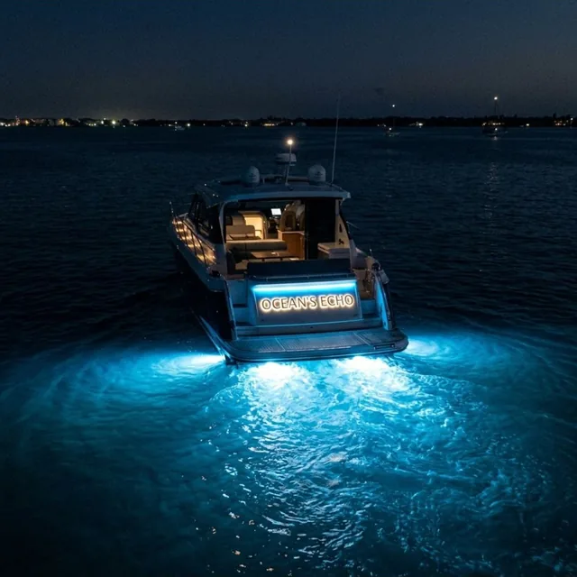

Refit intégral sur mesure — de la structure à l'électronique
Un bateau entièrement transformé : vaigrage, boiseries, inox, sellerie, mais aussi Starlink, enceintes, LED sous-marines, covering et lettrage LED — avec la même exigence de finition d'un bout à l'autre du chantier.
Le refit intégral, une transformation complète
Un refit intégral, c'est la transformation totale d'un bateau : structure intérieure, revêtements, équipements électroniques et personnalisation visuelle. Vaigrage, boiseries, inox, sellerie, mais aussi Starlink, enceintes marine, LED sous-marines, covering et lettrage lumineux — tout ce qui fait passer un bateau du fonctionnel au prestige.
Chez Prestige Nautic, le chantier est piloté comme un projet unique : de la pose de vaigrage à l'installation Starlink, chaque poste est coordonné avec les mêmes exigences de finition d'un bout à l'autre, pour un résultat cohérent et maîtrisé.
Un contact unique du premier rendez-vous à la livraison, qui pilote l'ensemble du projet et coordonne chaque étape. Vous suivez votre chantier en toute simplicité.
Matériaux assortis, finitions harmonisées du sol au plafond. Un projet pensé dans son ensemble pour une cohérence totale du résultat.
Un refit intégral bien exécuté multiplie la valeur de revente du bateau. Le retour sur investissement est immédiat à la revente.
Chaque refit est unique. Nous adaptons les matériaux, les couleurs et les aménagements à vos envies et au style de votre bateau.
Tout ce que comprend un refit intégral
Des finitions intérieures à l'électronique embarquée, chaque poste est traité avec la même exigence de bout en bout. Vous choisissez le périmètre, nous nous occupons du reste.
Structure & finitions
- Vaigrage intérieur Revêtements de coque, isolation phonique et thermique, habillage des cabines.
- Boiseries & menuiserie Meubles sur mesure, cloisons et habillages bois intérieurs.
- Inox intérieur sur mesure Mains courantes, platines et éléments décoratifs ou fonctionnels.
- Sellerie & peintures Coussins, revêtements de sol, peintures intérieures et vernis.
- Covering int. & ext. Film adhésif certifié marine : coque, tableau de bord, habitacle — mat, brillant, carbone ou brossé.
Électronique & personnalisation
- Installation Starlink Antenne, routeur et câblage intégrés — connexion haut débit partout en mer, sans câble apparent.
- Kit d'enceintes marine Enceintes étanches haute fidélité, intégration discrète au cockpit, carré et cabines.
- LED sous-marines Éclairage immergé de coque, câblage étanche intégré — effet spectaculaire au mouillage.
- LED d'ambiance int. & ext. Rubans et spots encastrés avec contrôle couleur et intensité — une atmosphère sur mesure.
- Lettrage bateau LED Nom du bateau en LED ou inox rétroéclairé — design personnalisé, rendu soigné jour et nuit.
Exemple de prestation possible
Un aperçu des prestations possibles dans un refit : audio marine, éclairage LED sous-marin et bien d'autres aménagements pensés pour le plaisir à bord.


Du diagnostic à la livraison
Un refit intégral se pilote comme un projet. Chaque étape est planifiée pour minimiser l'immobilisation de votre bateau et maximiser la qualité du résultat.
Diagnostic complet de l'intérieur
Inspection complète de l'intérieur : coque, vaigrage existant, boiseries, inox et zones à rénover. Identification des priorités et des contraintes techniques propres à votre unité.
Proposition et planning de chantier
Devis détaillé par prestation, choix des matériaux et des options, établissement d'un planning d'intervention réaliste pour minimiser les durées d'immobilisation.
Dépose et préparation
Retrait des éléments existants (teck, vaigrage, inox à remplacer), traitement des supports, nettoyage et mise en état des surfaces avant toute nouvelle installation.
Réalisation du chantier
Vaigrage, boiseries, inox, sellerie : chaque poste est exécuté dans le bon ordre et coordonné de près. Un chantier planifié, fluide et maîtrisé du début à la fin.
Contrôle global et livraison
Inspection de l'ensemble du chantier, correction des détails, nettoyage complet du bateau. Livraison avec tour de pont et documentation des travaux réalisés.
Tout savoir sur le refit intérieur
Qu'est-ce qu'un refit intérieur de bateau ?
C'est la rénovation complète de l'habitacle : vaigrage de coque, boiseries, éléments inox, sellerie et peintures intérieures. Le refit transforme un intérieur fatigué en un espace élégant et sur mesure, ou personnalise profondément un bateau récent.
Combien de temps dure un refit complet ?
La durée dépend de l'ampleur du chantier et de la taille du bateau, de quelques semaines à plusieurs mois. Nous établissons un planning précis avant le démarrage pour limiter l'immobilisation de votre unité.
Quel budget prévoir pour un refit intérieur ?
Chaque refit est unique : le budget varie selon les prestations retenues (vaigrage, boiseries, inox, sellerie) et le niveau de finition. Nous visitons le bateau et établissons un devis détaillé, poste par poste, gratuitement.
Puis-je ne rénover qu'une partie du bateau ?
Oui. Vous pouvez nous confier l'intégralité de l'intérieur ou seulement certains postes — par exemple le seul vaigrage ou de la soudure sur mesure. Le devis s'adapte à votre projet.
Où se déroule le chantier ?
Nous intervenons sur toute la Côte d'Azur depuis Toulon : Hyères, Bandol, Saint-Tropez, Cannes, Antibes, Nice et Monaco, à quai ou en chantier selon les travaux.
Installez-vous le Starlink sur tous types de bateaux ?
Oui. Nous installons le système Starlink (antenne, routeur, câblage) sur voiliers, motoryachts et catamarans. L'intégration est soignée — aucun câble apparent — et nous adaptons le positionnement de l'antenne selon la structure du bateau pour un signal optimal.
Peut-on combiner LED sous-marines et LED d'ambiance dans un même chantier ?
Absolument. C'est même la façon la plus cohérente de procéder : en traitant l'ensemble de l'installation électrique lumineuse en une seule intervention, on garantit une compatibilité totale entre les systèmes et on évite les reprises ultérieures. Nous proposons des éclairages avec contrôle couleur et intensité (RGB ou blanc chaud/froid).
Le covering résiste-t-il aux conditions marines ?
Nous utilisons exclusivement des films adhésifs certifiés marine, résistants aux UV, au sel, à l'humidité et aux chocs. La pose est réalisée dans des conditions contrôlées pour garantir l'adhérence et la durabilité. Coque, cockpit, tableau de bord, habillages intérieurs : chaque support reçoit le film adapté.
Proposez-vous le lettrage LED sur mesure ?
Oui. Le nom du bateau, le port d'attache ou tout autre élément graphique peuvent être réalisés en LED ou en inox rétroéclairé selon vos préférences. Nous gérons le design, la fabrication et la pose — avec un rendu soigné de jour comme de nuit.
Un projet de refit intérieur sur la Côte d'Azur ?
Partagez-nous votre projet — même si tout n'est pas encore défini. Nous visitons votre bateau, évaluons l'intérieur et vous proposons un devis complet et détaillé, poste par poste.
Demander un devis gratuit